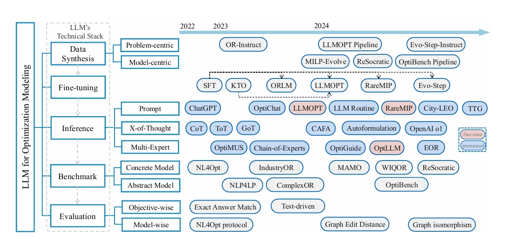

A Survey of Optimization Modeling Meets LLMs: Progress and Future Directions
A systematic map of LLM-based optimization modeling, from data and training to inference, benchmarks, and evaluation.

A taxonomy of LLM-based optimization modeling across data synthesis, fine-tuning, inference, benchmarks, and evaluation, with representative methods arranged chronologically.
01 / Research question
How can LLMs be guided to turn problem descriptions into reliable optimization models, and how can progress be evaluated fairly?
02 / Approach
The survey organizes prior work into a four-stage technical stack: data synthesis and fine-tuning, inference methods, benchmarks, and evaluation. It distinguishes concrete from abstract modeling; groups inference into prompting, X-of-Thought reasoning, and multi-agent collaboration; and compares objective-wise with model-wise evaluation. The authors also audited benchmark quality with 11 human experts, cross-validating each identified error with at least three experts, removed erroneous cases, and reran fully open-source methods in a unified setting.
03 / Research scope
The audit covers seven benchmarks, with test-set sizes from 37 to 652; reported minimum error rates range from 8.13% for EasyLP to 54.0% for IndustryOR. For a unified comparison, the authors evaluate fully open-source methods on the cleaned datasets, using GPT-4o-2024-08-06 for training-free methods and accuracy as the metric. They also discuss gaps in complex-problem coverage, inconsistent evaluation protocols, reasoning-model training, domain knowledge, and human-in-the-loop modeling.
Experimental results
Benchmark quality audit
| Method | Test instances | Complexity | Error rate lower bound (%) |
|---|---|---|---|
| NL4Opt | 289 | 5.59 | 26.40 |
| IndustryOR | 100 | 14.06 | 54.00 |
| EasyLP | 652 | 7.12 | 8.13 |
| ComplexLP | 211 | 13.35 | 23.70 |
| ReSocratic | 605 | 7.45 | 16.00 |
| NLP4LP | 269 | 5.58 | 21.70 |
| ComplexOR | 37 | 5.98 | 24.30 |
The paper reports these error rates as lower bounds (≥), based on expert review; 11 experts participated and each error case was cross-validated by at least three. Complexity is a paper-defined indicator based on the number of variables and constraints.
The audit finds substantial quality problems across commonly used benchmarks, particularly IndustryOR. The authors remove erroneous cases and provide a cleaned collection for more reliable evaluation.
Unified accuracy on cleaned benchmarks
| Method | NL4Opt | IndustryOR | EasyLP | ComplexLP | NLP4LP | ReSocratic | ComplexOR |
|---|---|---|---|---|---|---|---|
| Standard | 61.2 | 38.1 | 70.3 | 57.7 | 73.6 | 48.4 | 42.9 |
| Chain-of-Thought | 62.2 | 40.5 | 49.5 | 42.3 | 74.7 | 43.6 | 39.2 |
| Chain-of-Experts | 66.7 | 31.2 | 94.4 | 50.6 | 87.4 | 71.2 | 57.1 |
| CAFA | 68.1 | 41.1 | 71.2 | 44.5 | 50.0 | 40.1 | 46.4 |
| ORLM-LLaMA-3 8B | 73.8 | 42.9 | 90.4 | 59.5 | 76.4 | 61.8 | 50.0 |
All methods are evaluated on the same cleaned benchmark data. Some approaches discussed in the survey are not included because they are closed-source or interactive.
No single method wins on every benchmark. The results support the survey’s call for standardized data and evaluation, and show that gains from reasoning strategies vary with the dataset.
Citation
@inproceedings{modelingsurvey2025,
title = {A Survey of Optimization Modeling Meets LLMs: Progress and Future Directions},
author = {Ziyang Xiao and Jingrong Xie and Lilin Xu and Shisi Guan and Jingyan Zhu and Xiongwei Han and Xiaojin Fu and WingYin Yu and Han Wu and Wei Shi and Qingcan Kang and Jiahui Duan and Tao Zhong and Mingxuan Yuan and Jia Zeng and Yuan Wang and Gang Chen and Dongxiang Zhang},
booktitle = {IJCAI · Survey},
year = {2025},
url = {https://www.ijcai.org/proceedings/2025/1192}
}